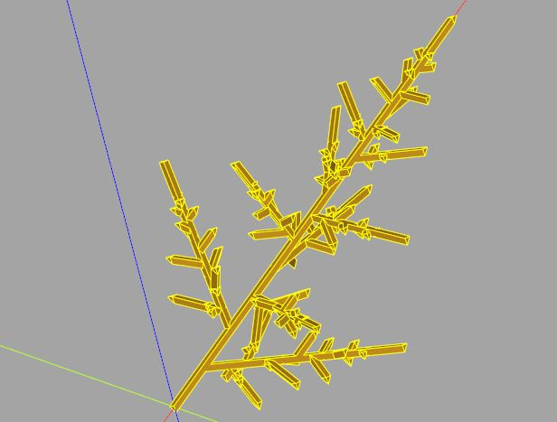

3D 碎形樹
November 28, 2021在〈3D 海龜繪圖〉曾經透過自行實作的 Matrix3D，進一步定義了 Turtle 類別，cqMore 的 cqmore.matrix 就定義了 Matrix3D，可以用來實現 Turtle 類別。
cqmore.matrix
cqmore.matrix 提供了 Matrix3D，也提供了 rotation、translation 等函式，可用來建立對應的轉換矩陣，若拿來實作 Turtle 類別的話，可以如下：
from cqmore.matrix import rotation, translation
class Turtle:
def __init__(self, pos = (0, 0, 0)):
self.coordinateVt = pos
self.xAxis = (1, 0, 0)
self.yAxis = (0, 1, 0)
self.zAxis = (0, 0, 1)
def forward(self, leng):
m = translation(tuple(elem * leng for elem in self.xAxis)) # type: ignore
self.coordinateVt = m.transform(self.coordinateVt)
return self
def roll(self, angle):
xr = rotation(self.xAxis, angle)
self.yAxis = xr.transform(self.yAxis)
self.zAxis = xr.transform(self.zAxis)
return self
def pitch(self, angle):
yr = rotation(self.yAxis, -angle)
self.xAxis = yr.transform(self.xAxis)
self.zAxis = yr.transform(self.zAxis)
return self
def turn(self, angle):
zr = rotation(self.zAxis, angle)
self.xAxis = zr.transform(self.xAxis)
self.yAxis = zr.transform(self.yAxis)
return self
def pos(self):
return self.coordinateVt
def copy(self):
t = Turtle()
t.coordinateVt = self.coordinateVt
t.xAxis = self.xAxis
t.yAxis = self.yAxis
t.zAxis = self.zAxis
return t
若使用海龜繪圖，海龜的狀態就是座標、方向等資訊，為了便於建立海龜複製品，這邊多定義了一個 copy 方法，這是因為海龜繪圖常使用遞迴來繪製碎形，而遞迴時最好一次只做一件事，而且當次遞迴時的狀態，最好與先前或後續遞迴無關，否則你就還得留意狀態重置問題。
若是在純函數式語言，沒有變數的概念下，這不成問題，然而若是以命令式的典範來實作，想要避免狀態重置的問題，最好的方式就是，複製當次遞迴時需要的狀態，當次遞迴若需改變狀態，只改變複製品。
碎形樹
基於 BREP 的 CadQuery，老實說並不適合用來進行碎形繪製的任務，這個任務反而是基於 CSG 的 OpenSCAD 比較合適，不過若碎形階數不高，還可以勉強為之，只不會效率不佳就是了。
這邊以 OpenSCAD 文件中曾經談過的〈碎形之二（3D 樹木曲線）〉為例，來看看 CadQuery 要怎麼做，以下先列出全部程式碼：
from cqmore.matrix import rotation, translation
from cqmore import Workplane
from cqmore.polyhedron import tetrahedron
class Turtle:
def __init__(self, pos = (0, 0, 0)):
self.coordinateVt = pos
self.xAxis = (1, 0, 0)
self.yAxis = (0, 1, 0)
self.zAxis = (0, 0, 1)
def forward(self, leng):
m = translation(tuple(elem * leng for elem in self.xAxis)) # type: ignore
self.coordinateVt = m.transform(self.coordinateVt)
return self
def roll(self, angle):
xr = rotation(self.xAxis, angle)
self.yAxis = xr.transform(self.yAxis)
self.zAxis = xr.transform(self.zAxis)
return self
def pitch(self, angle):
yr = rotation(self.yAxis, -angle)
self.xAxis = yr.transform(self.xAxis)
self.zAxis = yr.transform(self.zAxis)
return self
def turn(self, angle):
zr = rotation(self.zAxis, angle)
self.xAxis = zr.transform(self.xAxis)
self.yAxis = zr.transform(self.yAxis)
return self
def pos(self):
return self.coordinateVt
def copy(self):
t = Turtle()
t.coordinateVt = self.coordinateVt
t.xAxis = self.xAxis
t.yAxis = self.yAxis
t.zAxis = self.zAxis
return t
def turtle_tree(leng, leng_scale1, leng_scale2, limit, turnAngle, rollAngle, line_diameter):
# 收集線段用的 Workplane
_LINE_WORKPLANE = Workplane()
_LINE_JOIN = _LINE_WORKPLANE.polyhedron(*tetrahedron(line_diameter / 2))
def line(p1, p2):
# 透過 polylineJoin 來建立線段
return _LINE_WORKPLANE.polylineJoin([p1, p2], _LINE_JOIN)
def _turtle_tree(workplane, turtle, leng, leng_scale1, leng_scale2, limit, turnAngle, rollAngle):
if leng > limit:
workplane = workplane.add(
# 繪製線段
line(turtle.pos(), turtle.forward(leng).pos())
)
workplane = _turtle_tree(
workplane,
turtle.copy().turn(turnAngle),
leng * leng_scale1,
leng_scale1,
leng_scale2,
limit,
turnAngle,
rollAngle
)
return _turtle_tree(
workplane,
turtle.copy().roll(rollAngle),
leng * leng_scale2,
leng_scale1,
leng_scale2,
limit,
turnAngle,
rollAngle
)
return workplane
# 最後必須將收集的線段 combine
return _turtle_tree(
Workplane(),
Turtle(),
leng,
leng_scale1,
leng_scale2,
limit,
turnAngle,
rollAngle
).combine()
leng = 20
limit = 1
leng_scale1 = 0.4
leng_scale2 = 0.9
turnAngle = 60
rollAngle = 135
line_diameter = 4
tree = turtle_tree(
leng,
leng_scale1,
leng_scale2,
limit,
turnAngle,
rollAngle,
line_diameter
)
在海龜前進時必須繪製線段，在上面 turtle_tree 的程式註解裡可以看到，這是透過 cqmore.Workplane 的 polylineJoin 來實現。
OpenSCAD 繪製出來的圖形，在 render 模型時會自動聯集，然而在 CadQuery 不會這麼做，全部線段必須收集起來，最後收集的線段得 combine 在一起。
來看看繪製後的成果：
